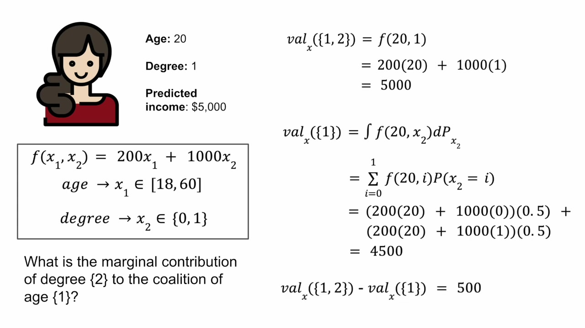

From Shapley Values to Model Explanations
Companion to A Data Odyssey’s video · Conor O’Sullivan
In the competition example, we knew the winnings for every possible team. To explain a model prediction, we need an equivalent table: one number for each group of known feature values. Once we have those numbers, averaging contributions works exactly as before.
The important phrase is known feature values. We are explaining one particular person. If age joins the group, we reveal that person’s actual age. We do not retrain the model, remove its age column, or ask how important age is for everyone.
Keep one small model fixed
The playlist uses this deliberately simple income model:
Degree is 1 when a person has a degree and 0 otherwise. We want to explain the prediction for someone aged 20 who has a degree. Substituting those two values gives $200\times20+1000\times1=5000$. This deliberately simple teaching formula produces an output in dollars.
For the reference population, assume ages are uniformly distributed from 18 to 60, so their mean is 39. Half the reference population has a degree. We also take age and degree to be independent in this constructed example. Those choices tell us how to average predictions when a value is unknown.
Unknown means “average over reference values”
Suppose we know only that the person is 20. The model still needs a value for degree. Instead of inventing one permanent replacement, evaluate both possibilities and average them with their reference probabilities.
Has a degree: 200 × 20 + 1,000 × 1 = 5,000.
Only age known: 0.5 × 4,000 + 0.5 × 5,000 = 4,500.
The prediction rises from 4,500 to 5,000 when we also reveal degree = 1. In this situation, degree contributes 500. It does not contribute the model coefficient of 1,000, because the reference comparison already includes a 50% chance of having a degree.


Now reverse the situation. If degree is known but age is not, average over the reference ages. This particular model is linear in age, so averaging its predictions gives the same result as substituting the mean age: $200\times39+1000=8800$. For a nonlinear model, predicting at the mean input generally does not equal averaging the predictions.
If neither feature is known, average over both: $200\times39+1000\times0.5=8300$. If both are known, we have the original prediction of 5,000. That gives the complete table.
| Known values | What we average over | Average model output |
|---|---|---|
| Neither | Reference ages and degree values | 8,300 |
| Age = 20 | Reference degree values | 4,500 |
| Degree = 1 | Reference ages | 8,800 |
| Age = 20 and degree = 1 | Nothing; the whole row is known | 5,000 |
Average the contributions in both orders
Reveal age first. The output moves from 8,300 to 4,500, so age contributes −3,800. Then reveal degree: 4,500 becomes 5,000, so degree contributes +500.
Reveal degree first. The output moves from 8,300 to 8,800, so degree contributes +500. Then age moves it from 8,800 down to 5,000, contributing −3,800. The two orders happen to agree because this model adds separate age and degree terms and our reference rule does not make one depend on the other.
The person’s prediction is below the reference average because age makes a larger downward contribution than degree’s upward contribution. We have derived a complete explanation with the same averaging rule used to divide the competition prize.
How a real background dataset supplies the averages
Real datasets rarely come with distributions as convenient as a uniform age range. A practical approach is to keep a sample of reference rows. For each group of known features, make a copy of each reference row and overwrite the known columns with the values of the person being explained. Predict on all the completed rows, then average the outputs.
For example, to reveal age = 20, replace the age column of every reference row with 20 while retaining each row’s degree value. To reveal degree = 1 instead, replace degree while retaining each row’s age. With no columns replaced, the mean prediction is the baseline. With every column replaced, every completed row becomes the same person, so the mean is their prediction.
This operation is often called masking. A mask such as [1, 0] means “keep the explained age, supply degree from the background.” A zero in the mask does not tell the model to use the number zero. It says that the explained value is hidden for this calculation.
Write $v(S)$ for the average output when the features in $S$ are revealed. The Shapley formula now uses this $v(S)$ in place of competition winnings. If $F$ contains all features, then $v(F)=f(x)$, and the contributions satisfy:
The empty-set symbol $\varnothing$ means no features are known. Its value is the baseline. The full set gives the prediction, so the contributions share the difference between those endpoints.
The averaging rule also gives a useful consistency property. Keep the participants and reference rule fixed. If a changed model gives a feature at least as large a marginal contribution in every possible preceding group, that feature’s Shapley value cannot decrease: we are averaging numbers that never decreased, using the same nonnegative weights. This condition concerns every group, not just one prediction or a coefficient.
Changing the reference changes the explanation
Suppose the reference ages now average 30 while the degree distribution stays the same. The baseline becomes 6,500. Age contributes −2,000, degree contributes +500, and the prediction remains 5,000. Nothing about the person or model changed; we asked for a comparison against a different population.
There is another choice hidden in the averaging rule. We could use all reference degree values when revealing age, or use degree values typical of people of that age. These are different questions when features are dependent. The first uses background replacement; the second uses a conditional distribution. We will examine the consequences in Part 6.
The calculation becomes expensive
With two features there are four groups to evaluate. With three, there are eight. With $M$ features there are $2^M$ groups, and each group can require predictions for many background rows. We can reuse a group’s value across arrival orders, but an exhaustive calculation still grows quickly.
Several algorithms make this practical. Sampling feature orders estimates the average from a smaller collection of orders. More samples can reduce sampling error, though the reference choice remains the same.
Kernel SHAP: estimate all contributions together
Kernel SHAP represents each revealed group as a row of zeros and ones. Its target is that group’s average prediction. It fits an additive expression whose intercept is the baseline and whose coefficients are the feature contributions. The weighted regression uses a particular Shapley kernel, rather than ordinary equal weights.
The empty and complete groups fix the endpoints. For an interior group containing $k$ of the $M$ features, the kernel weight is $(M-1)/[\binom{M}{k}k(M-k)]$. The binomial coefficient counts how many groups of size $k$ exist. With the complete group table and the appropriate unregularized constrained fit, this recovers the Shapley allocation. Sampling groups and selecting features introduce estimation choices.
Tree SHAP: use the model’s structure
Tree SHAP can avoid explicitly evaluating every group by using a tree’s splits, leaf values, and path information. It computes exact Shapley values for supported tree models under the selected explanation rule. The word “exact” refers to that calculation; it does not make all reference rules equivalent.
In the Python package, an interventional tree explanation uses a supplied background dataset. A tree-path-dependent explanation instead uses counts recorded along the fitted tree paths. The latter is not generally the same as the full conditional distribution of the original data. We will set the mode explicitly in our examples so the calculation is clear.
For an ensemble, contributions combine in the same way as the outputs being explained, provided the individual explanations use the same game. A sum of tree outputs has summed contributions; an average has averaged contributions. Applying a nonlinear transformation afterward changes the output being explained, which will matter for classification.
For a complete derivation using one small tree, continue with the companion TreeSHAP series. It calculates every feature group, explains the efficient algorithm, and verifies the result against the library.
The hand-calculation script verifies the income example. For algorithm details, see the original SHAP paper, KernelExplainer, and TreeExplainer. We now have enough background to train a model and check a real explanation.